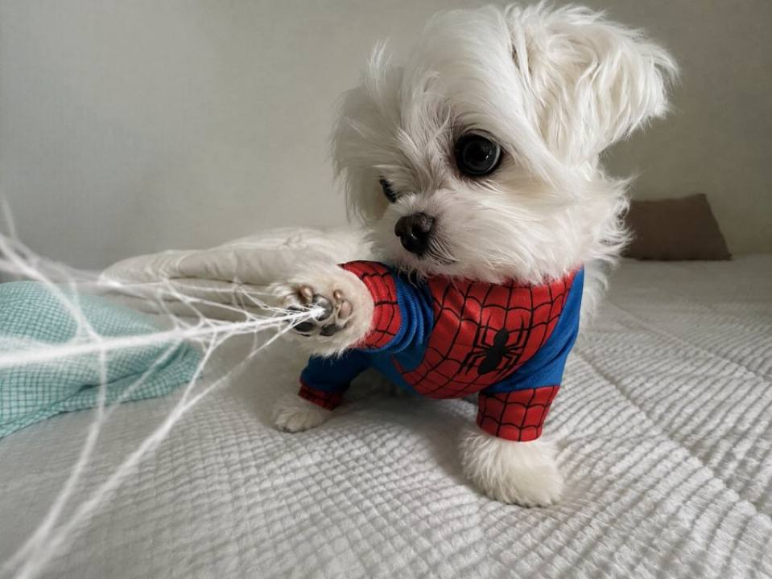
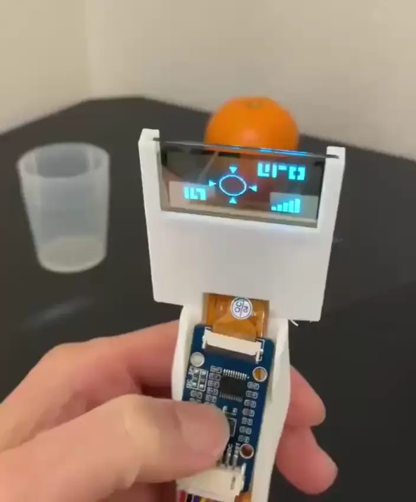

BAILEY
BAILEY started as a late-night experiment using spare parts Linus had lying around in his lab. He wanted to see if he could build a small four-legged machine that could move around on its own. What began as a simple project gradually became more advanced as he taught it how to balance, move around obstacles, and recognize its surroundings.
Eventually, Linus connected BAILEY to Telegram so it could send him updates and respond to simple commands. It became a regular presence in his lab, moving between workbenches, carrying small tools, and occasionally bringing him his coffee when he was too focused on his work to get up. Linus still calls it “just a prototype,” despite how much time he has spent improving it.

VIPER
VIPER was created after Linus spent nearly three hours looking for a specific microcontroller buried somewhere in his lab. Frustrated with constantly losing track of small equipment, he decided to build something that could help him find things. The result was a handheld scanner with a camera and small display that could recognize and keep track of common objects around his workspace.
Instead of searching through every shelf and container, Linus could use VIPER to help locate circuit boards, components, bottles, and other equipment. What started as a solution to one frustrating afternoon eventually became one of the most useful tools in his lab.

APEX
APEX-4 came from a more serious problem. Linus had seen technicians enter hot, cramped, and potentially dangerous areas just to find out what was wrong with a machine. He wanted to create something that could go in first. APEX-4 is a small, heavily protected robot equipped with cameras and sensors that allow it to detect unusual heat, vibrations, and possible leaks.
It can move through industrial areas, gather information, and send its findings back to the people monitoring it. The goal was never to replace the technicians, but to keep them out of unnecessary danger. For Linus, APEX-4 was a practical example of how robotics could be used to make difficult and dangerous work safer.